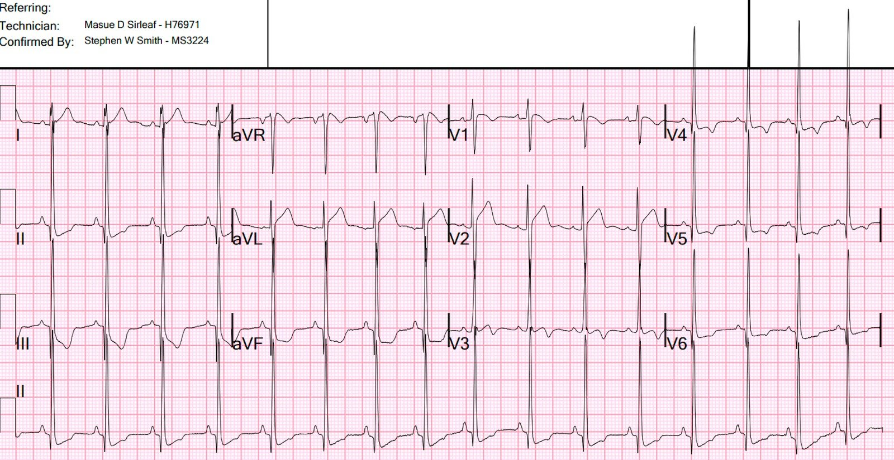
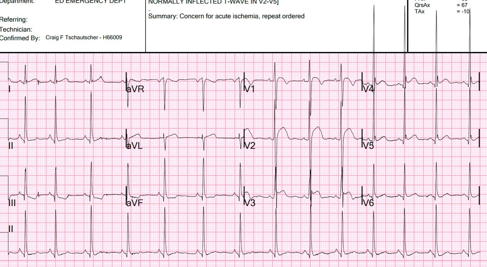
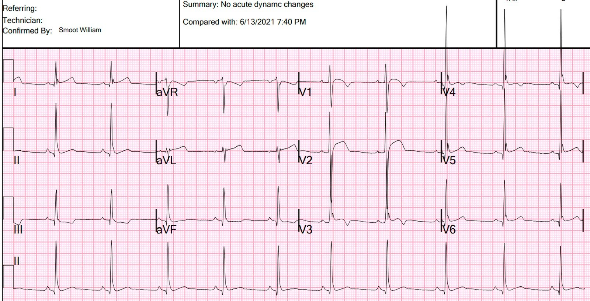
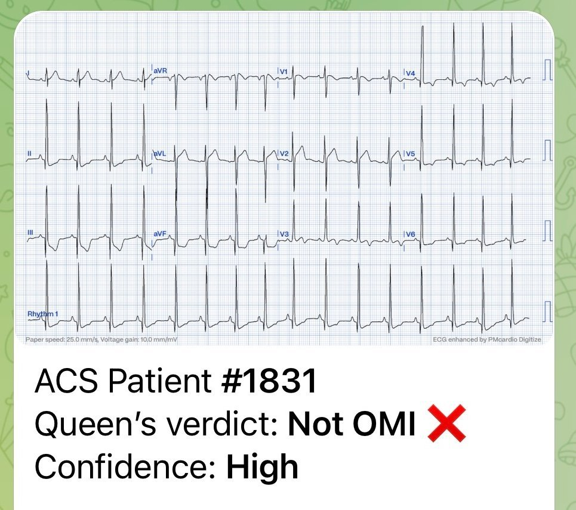
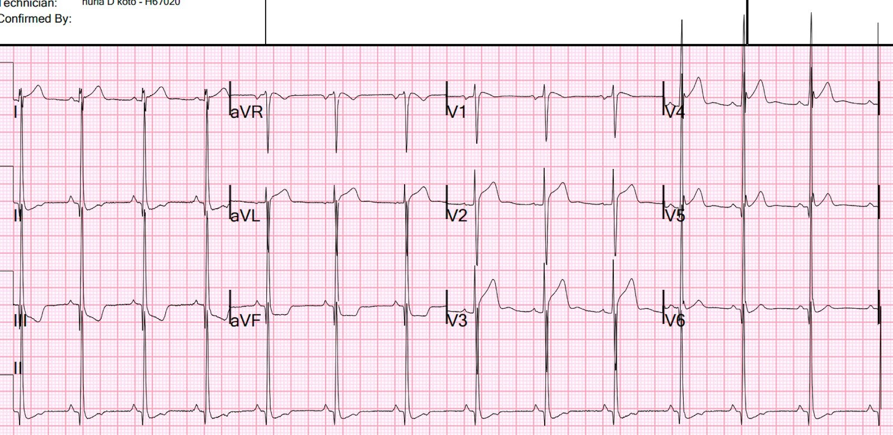
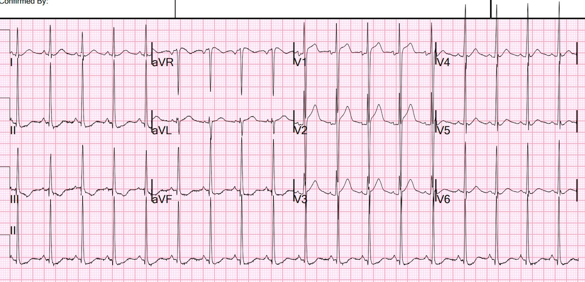
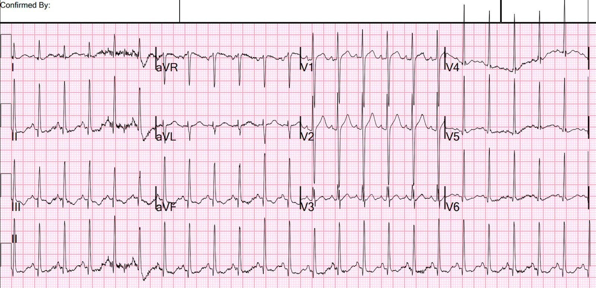

27/07/2023 — ST chênh xuống rất sâu ở II, III, aVF
Bản dịch tiếng Việt của bài "Profound ST depression in II, III, aVF" – Dr. Smith’s ECG Blog. Giữ nguyên toàn bộ 8 hình ảnh của bản gốc.
Bệnh nhân nam 29 tuổi, người Mỹ gốc Phi, được phát hiện nằm gục, bất tỉnh, ngừng thở và được một người đi đường cho dùng 2 mg naloxone qua đường mũi. Sau đó bệnh nhân được thông khí bằng bóng-van-mặt nạ trong vài phút cho đến khi có đáp ứng.
Bệnh nhân có một điện tâm đồ trước viện khiến nhân viên cấp cứu ngoài viện lo ngại, nên họ gọi tôi ra khám ngay tại cửa.
Khi đến khoa cấp cứu (ED), bệnh nhân vã mồ hôi, nhịp tim nhanh và đồng tử giãn. Bệnh nhân tỉnh táo và định hướng được. Bệnh nhân vẫn còn hơi rối loạn ý thức, và bệnh sử không đáng tin cậy.
Điện tâm đồ trước viện cho thấy ST chênh xuống ở “thành dưới” và điện thế cao, kèm nhịp nhanh. Tôi không nghĩ là do hội chứng vành cấp (ACS), nhưng chúng tôi cho ghi ngay một điện tâm đồ tại khoa cấp cứu:


Bạn nghĩ gì?
Có ST chênh xuống rất sâu ở “thành dưới”. Thông thường, hình ảnh này là soi gương (reciprocal) của ST chênh lên ở thành bên cao, vốn có thể rất kín đáo. Nhưng trong ca này, bối cảnh lâm sàng không phù hợp với ACS cấp có OMI, điện thế lại rất cao, và bệnh nhân còn rất trẻ, (dù vậy hãy cảnh giác với bệnh nhân trẻ, kể cả người 29 tuổi!!, xem cả ở đây và ở đây).
Tôi nghi ngờ đây không phải OMI, mà có thể là do LVH cộng với nhịp nhanh. Tôi không lo lắng về một nguyên nhân mạch vành.
Nhưng tôi không chắc chắn, nên chúng tôi lên kế hoạch làm siêu âm tim tại giường (kết quả bình thường) và đo troponin nhiều lần liên tiếp.
Tra cứu hồ sơ, chúng tôi tìm thấy một điện tâm đồ từ 2 năm trước:


Có một số điểm tương đồng ở các chuyển đạo thành dưới, nên tôi nghi ngờ điện tâm đồ hôm nay là sự phóng đại của hình ảnh ST chênh xuống (STD) này
Điện tâm đồ 2 năm trước, ở tần số tim chậm hơn


Ở tần số tim chậm hơn, STD ít hơn
Tôi đã gửi điện tâm đồ hôm nay cho Queen of Hearts (PMcardio OMI), và đây là kết luận:


Kết quả hs-troponin I lần đầu là 250 ng/L.
Điện tâm đồ lúc 4,5 giờ:


Không thay đổi nhiều
hs troponin I đạt đỉnh 500 ng/L
Lúc 8 giờ


Sáng hôm sau


Xét nghiệm sàng lọc ma túy trong nước tiểu:
Amphetamine, Methamphetamine, Fentanyl, chất chuyển hóa của Fentanyl
Siêu âm tim cản âm bằng bọt khí (bubble contrast) chính thức:
Chỉ định thăm dò: Thiếu máu cục bộ thầm lặng.
TÓM TẮT
Kích thước buồng thất trái bình thường.
Phân suất tống máu thất trái ước tính bình thường .
Không có rối loạn vận động thành .
Phân suất tống máu thất trái ước tính là 67 %.
Áp lực tâm thu động mạch phổi ước tính là 29 mmHg + áp lực nhĩ phải (RA).
Kết luận:
Nhiều khả năng là nhồi máu cơ tim típ II do thiếu oxy và nhịp nhanh, hậu quả của ngừng thở và sử dụng amphetamine. ST chênh xuống trên điện tâm đồ có phản ánh thiếu máu cục bộ hay không thì chưa chắc chắn, nhưng nó không phản ánh hội chứng vành cấp.

===================================
BÌNH LUẬN CỦA TÔI, bởi KEN GRAUER, MD (27/7/2023):
===================================
Những khía cạnh thú vị nhất của ca hôm nay là: i) Câu chuyện mà 6 điện tâm đồ kể lại; và, ii) Phát hiện bất ngờ troponin dương tính!
Tổng thể Lớn hơn từng phần cộng lại:
Nếu nhìn lại điện tâm đồ ban đầu trong ca hôm nay — rất dễ để sự chú ý của ta bị “cuốn” vào ST chênh xuống ở các chuyển đạo thành dưới (đặc biệt là đoạn ST đi xuống dốc và sâu “bắt mắt” ở chuyển đạo III) + hình dạng đối xứng soi gương ngược chiều của ST chênh lên (với đoạn khởi đầu ST thẳng quá mức) ở chuyển đạo aVL. Trong hầu hết các trường hợp — sự kết hợp các dấu hiệu điện tâm đồ này sẽ gợi ý một biến cố cấp. Nhưng — tổng thể của điện tâm đồ ban đầu này lớn hơn từng phần cộng lại. Về các chi tiết cụ thể của điện tâm đồ ban đầu này:
- Biên độ QRS ở nhiều chuyển đạo rất lớn! Dù tôi không biết tuổi bệnh nhân lúc xem bản ghi ban đầu này — rõ ràng là tiêu chuẩn điện thế cho LVH sẽ dễ dàng thỏa mãn. ST chênh xuống ở các chuyển đạo ngực bên (kèm sóng T đảo ngược phần cuối ở các chuyển đạo V4,V5) ủng hộ nhận định của tôi về LVH rõ rệt, dựa trên hình ảnh ST-T điển hình của tăng gánh (“strain”) thất trái.
- ĐIỂM THEN CHỐT (PEARL) #1: Trục mặt phẳng trán trên điện tâm đồ ban đầu này là trục đứng (QRS biên độ nhỏ, gần như đẳng điện ở chuyển đạo I — trong khi sóng R ở các chuyển đạo thành dưới rất lớn). Điện thế tăng và thay đổi ST-T của “tăng gánh” thất trái thường gặp không chỉ ở các chuyển đạo bên, mà cả ở các chuyển đạo thành dưới khi có LVH rõ rệt và trục mặt phẳng trán hướng xuống dưới. Với nhận định “tổng thể” ban đầu của tôi về bản ghi này (tức là LVH rõ rệt kèm “tăng gánh” thất trái) — tôi không cho rằng ST chênh xuống ở các chuyển đạo thành dưới là không tương xứng, khi xét đến tần số tim tương đối nhanh (~90/phút) và sóng R rất lớn >25mm ở các chuyển đạo thành dưới!
- Các dấu hiệu đáng chú ý khác trên điện tâm đồ thứ 1 này gồm: i) Sóng Q dưới-bên rất sâu (tức là >8mm ở chuyển đạo III!); — ii) Sóng R cao bất ngờ (>10 mm) ngay từ chuyển đạo V2; — iii) ST chênh lên với đoạn khởi đầu ST thẳng đến mức đáng báo động ở chuyển đạo V2; — và, iv) Hình ảnh sóng T hai pha bất thường ở chuyển đạo V3.
- Nhận định của tôi về điện tâm đồ thứ 1 này: Xét tất cả các dấu hiệu trên, tôi nghĩ — Tổng thể lớn hơn từng phần cộng lại! Ngay cả khi chưa biết đầy đủ bệnh sử — tôi đọc điện tâm đồ thứ 1 này là LVH rõ rệt kèm “tăng gánh” thất trái — có lẽ ở một nam thanh niên người Mỹ gốc Phi có kèm yếu tố biến thể tái cực — nhưng không gợi ý OMI cấp. Tôi không nghĩ troponin sẽ dương tính.
Tổng hòa của Cả 6 điện tâm đồ:
Thay vì mô tả mọi dấu hiệu trên từng bản ghi trong 6 bản ghi này — tôi nghĩ “bức tranh tổng thể” mà các bản ghi này truyền tải mới là thông điệp quan trọng hơn. Biên độ QRS tăng rõ rệt thấy trên mọi bản ghi.
- Khía điểm J nổi bật kèm ST chênh lên, điển hình của biến thể tái cực, đã thấy trên các bản ghi trước đây (cả hai bản đều được ghi ở tần số tim chậm hơn). Mức độ ST chênh xuống tương đối ở các chuyển đạo thành dưới rõ ràng ít hơn trên các bản ghi trước đây này.
- Trên 4 điện tâm đồ liên tiếp ghi trong lần nhập viện này — tần số tim thay đổi rất nhiều — chậm lại còn ~80/phút @ 4,5 giờ sau nhập viện — nhưng tăng lên mức nhanh bất ngờ 135/phút trên điện tâm đồ ghi sáng hôm sau. “Chủ đề” của hình ảnh ST-T qua 4 bản ghi liên tiếp này — là ST chênh xuống giảm dần, với ST-T dẹt không đặc hiệu trên bản ghi có nhịp nhanh nhất ghi vào sáng hôm sau.
- ĐIỀU CỐT LÕI: Dù có thể gợi ý một mức độ thiếu máu cục bộ nào đó — đánh giá “tổng hòa” của tôi đối với 4 bản ghi liên tiếp trong lần nhập viện này, đặt trong bối cảnh 2 bản ghi trước đây — là LVH rõ rệt kèm biến thể tái cực + thay đổi ST-T liên quan tần số, phản ánh diễn tiến bệnh lý nền của bệnh nhân này — nhưng không có gì gợi ý một biến cố tim cấp.
- ĐIỂM THEN CHỐT (PEARL) #2: Dù tôi luôn ủng hộ việc đọc có hệ thống, so sánh từng chuyển đạo một các thay đổi trên các điện tâm đồ liên tiếp — Đôi khi bạn chỉ cần “lùi lại một bước” khỏi các bản ghi và nắm lấy “chủ đề tổng thể” mà nhiều điện tâm đồ này đang thể hiện. Dù không thể giải thích hết các sắc thái của mọi thay đổi trên 6 điện tâm đồ ở trên — “chủ đề” là không có OMI cấp.
Amphetamine Dương tính:
Dù chúng tôi không biết chi tiết về lần nhập viện của bệnh nhân này để có thể giải thích vì sao tần số tim nhanh nhất lại thấy trên điện tâm đồ cuối cùng (ghi vào sáng hôm sau) — giải thích hợp lý nhất là lạm dụng ma túy lâu dài kèm sử dụng amphetamine cấp.
- Nồng độ đỉnh trong huyết tương của amphetamine đạt được nhanh (trong vòng vài phút) sau khi hít hoặc tiêm. Thời gian tác dụng của amphetamine rất thay đổi (tùy thuộc nhiều yếu tố) — nhưng có thể kéo dài nhiều giờ, điều này có thể giải thích dấu hiệu sinh tồn dao động của bệnh nhân này ngay cả vào ngày sau khi nhập viện!
- Các tác dụng tim mạch tiềm tàng của việc sử dụng amphetamine cấp rất đa dạng. Dù tăng huyết áp và nhịp nhanh xoang là các biểu hiện thường gặp nhất — có thể gặp nhiều rối loạn nhịp nhanh khác (kể cả VT dẫn đến ngừng tim) và nhồi máu cơ tim cấp.
- ĐIỂM THEN CHỐT (PEARL) #3: Cơ chế sinh lý bệnh gây nhồi máu cơ tim cấp do amphetamine chưa rõ (Bazmi và cs. — SQUMJ 17(10); e31-37, 2017 — và — Sinha và cs. — Case Rep Cardiol, 2016). Các giải thích có thể gồm: i) Co thắt mạch vành, với một giai đoạn tắc mạch vành ngắn; ii) Mất cân bằng cung-cầu (nhồi máu cơ tim típ II) — khởi phát do đợt tăng vọt catecholamine do amphetamine; và/hoặc, iii) Ngưng tập tiểu cầu qua trung gian catecholamine, sau đó hình thành huyết khối. Dù OMI do hình thành huyết khối cấp là cơ chế ít gặp nhất trong các cơ chế này — tắc mạch vành cấp do huyết khối vẫn có thể xảy ra (Vichairuangthum — Arch Med Sci Atheroscler Dis 5:e45-48, 2020).
ĐIỀU CỐT LÕI trong CA Hôm nay:
Tôi bất ngờ với troponin tăng trong ca hôm nay. Dù vậy — các tác dụng có hại của việc sử dụng amphetamine cấp đã được ghi nhận rõ — và điều quan trọng cần nhớ là phải cân nhắc nhồi máu cơ tim cấp do một trong nhiều cơ chế có thể xảy ra.
- OMI luôn là một khả năng khi sử dụng amphetamine cấp. Dù vậy — đặc điểm của các điện tâm đồ liên tiếp trong ca hôm nay + siêu âm tim tại giường không thấy bất kỳ rối loạn vận động thành khu trú nào đã loại trừ nhu cầu kích hoạt phòng thông tim trong ca hôm nay.
- Nhìn lại — ST-T chênh xuống rõ rệt ở các chuyển đạo thành dưới trên điện tâm đồ ban đầu nhiều khả năng là biểu hiện của nhồi máu cơ tim típ II ở bệnh nhân này — vì các thay đổi ở chuyển đạo thành dưới này giảm dần trên các bản ghi sau đó. Dù vậy — các bác sĩ điều trị đã biết troponin tăng, và việc xử trí lâm sàng trong suốt ca bệnh là hoàn toàn phù hợp.